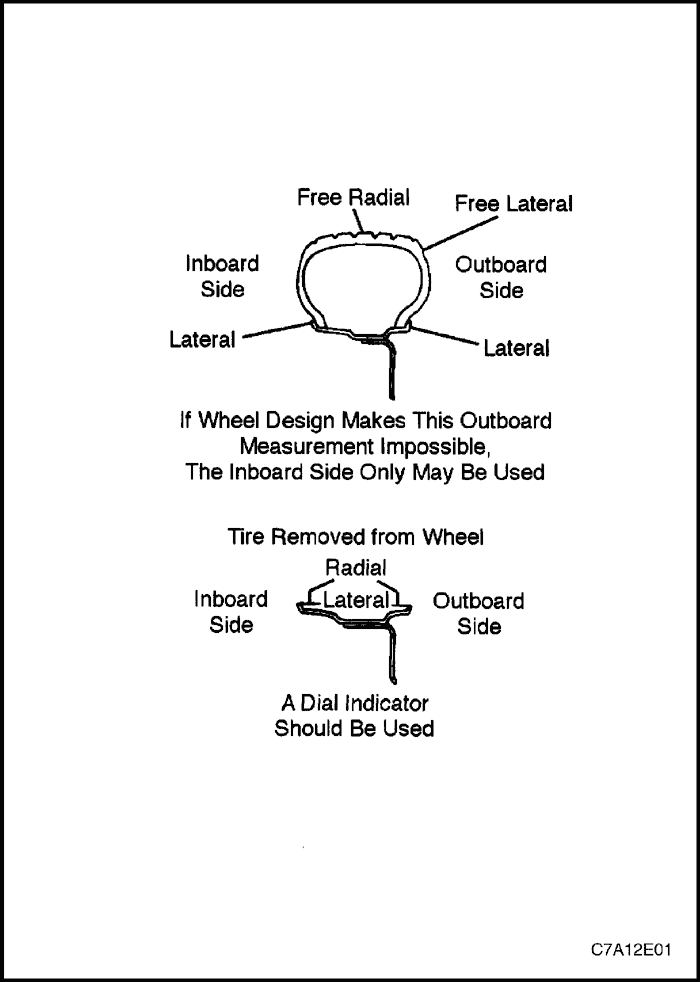
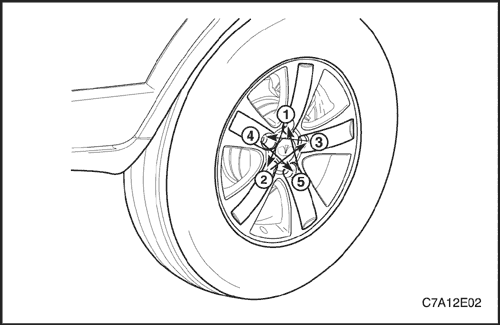
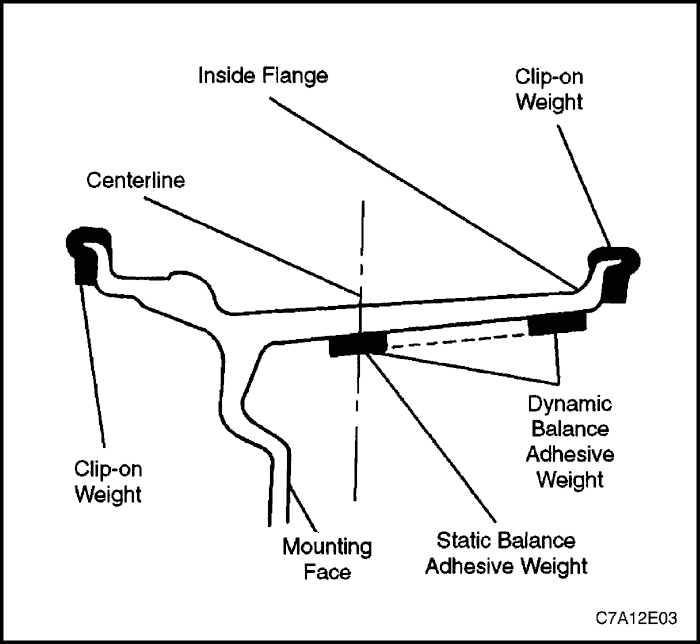
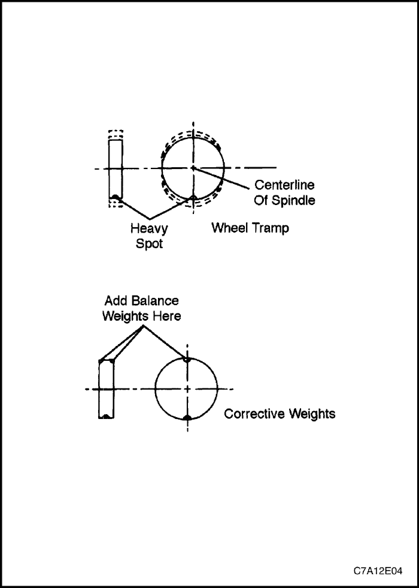
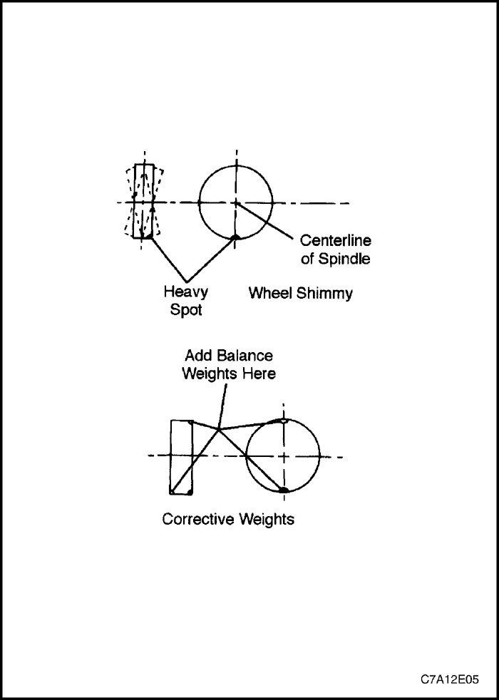
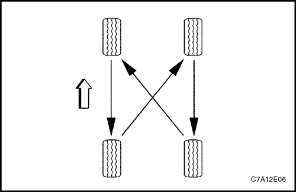

SECCIÓN 2E
NEUMÁTICOS Y RUEDAS
ESPECIFICACIONES
Especificaciones de tamaño y presión de los neumáticos
Presión de inflado a plena carga
| Neumáticos | Llanta | Delanteros | Traseros |
| . | kPa | lbs/pulg2 | kPa | lbs/pulg2 |
| . | 215/70R 16 | . | 6,5J x 16 (acero/aleación) | . | . | . | . |
| NORMAL | 235/60R17 | NORMAL | 7J x 17 (aleación) | 207 (228*) | 30 (33*) | 207 (241*) | 30 (35*) |
| . | 235/55R18 | . | 7J x 18 (aleación) | . | . | . | . |
| TEMPORAL | T155/90R16, 215/70R16 | TEMPORAL | 4T x 16 (acero), 6,5J x 16 (acero) | 414 | 60 | 414 | 60 |
*: Presión de inflado para 5 pasajeros o más.
Especificaciones de conversión de presión de inflación de neumáticos
| KPa | lbs/pulg2 | KPa | lbs/pulg2 | KPa | lbs/pulg2 |
| 138 | 20 | 186 | 27 | 234 | 34 |
| 145 | 21 | 190 | 28 | 241 | 35 |
| 155 | 22 | 200 | 29 | 250 | 36 |
| 160 | 23 | 207 | 30 | 276 | 40 |
| 165 | 24 | 215 | 31 | 310 | 45 |
| 170 | 25 | 220 | 32 | 345 | 50 |
| 180 | 26 | 228 | 33 | 379 | 55 |
Especificaciones de apriete
| Aplicación | N•m | Lb-pie | Lb-pulg. |
| Tuerca de la rueda (llanta de aleación) | 125 | 92 | - |
| Tuerca de la rueda (llanta de acero) | 125 | 92 | - |
DIAGNÓSTICO
Desvío de la rueda
Mida la excentricidad de la rueda con un comparador de precisión. Las mediciones pueden realizarse con las ruedas montadas o desmontadas del vehículo, empleando una superficie de apoyo de precisión como un equilibrador de ruedas. Las mediciones pueden hacerse igualmente con el neumático montado o desmontado de la llanta.
Mida la excentricidad radial y lateral en las pestañas interior y exterior de la llanta. Con el comparador fijado firmemente cerca del conjunto de rueda y neumático, gire la rueda poco a poco una revolución y anote la lectura del indicador. Si cualquiera de las mediciones sobrepasa las siguientes especificaciones y hay una vibración que no podrá corregirse con el equilibrado de la rueda, sustitúyala. Haga caso omiso de cualquier lectura del indicador debida a soldaduras, restos de pintura o arañazos.
Mida la excentricidad radial libre en el centro de la banda de rodadura. La superficie de rodadura puede taparse con cinta adhesiva para que presente una superficie lisa. Mida la excentricidad lateral libre en el lado exterior del neumático más cercano a la banda de rodadura.
Llantas de acero/aleación
- Excentricidad radial: 0,8 mm (0,03 pulg.).
- Excentricidad lateral: 1,0 mm (0,04 pulg.).



MANTENIMIENTO Y REPARACIÓN
servicio con vehículo en marcha

Rueda
Procedimiento de desmontaje
- Quite el tapacubos (llanta de acero solamente).
- Afloje las tuercas de la rueda.
- Levante y apoye el vehículo adecuadamente.
- Quite las tuercas de la rueda.
Aviso: No utilice nunca calor para aflojar una rueda demasiado apretada. Esto puede acortar la vida de las tuercas, de los cojinetes y de la propia rueda. Un esfuerzo excesivo, como golpear con un martillo la rueda o el neumático puede causar daños, por lo que tampoco es recomendable. Unos golpes ligeros en el lateral de la rueda, con la mano o con un martillo de goma, resultan aceptables.
- Desmonte el conjunto de rueda y neumático.
Si tiene dificultades a la hora de desmontar la rueda, esto puede deberse a la suciedad o a un ajuste muy apretado entre el agujero central de la rueda y el cubo o el disco. Estas ruedas pueden ser desmontadas:
- Volviendo a apretar las tuercas de la rueda afectada y luego aflojándolas dos vueltas.
- Volviendo a apretar las tuercas de la rueda afectada y luego aflojándolas dos vueltas.
- Baje el vehículo y zarandee la rueda tanto como pueda, empleando el peso de una o más personas para aflojarla.
- Eleve el vehículo y desmonte la rueda.
Precaución: No deje que entre aceite muy fluido en las superficies verticales que hay entre la rueda y el tambor (o disco), ya que esto haría que la rueda se aflojase conforme se conduce el vehículo, pudiendo resultar en la pérdida de control y provocar accidentes peligrosos.
El aceite muy fluido no es eficaz para desmontar ruedas demasiado apretadas. No obstante, si lo utiliza, aplíquelo con moderación y sólo en el agujero central de la rueda.
procedimiento de montaje
Aviso: Antes de montar las ruedas, elimine cualquier acumulación de óxido en la superficie de apoyo de la rueda y del disco de freno raspándola y cepillándola con un cepillo de alambres. El montaje de las ruedas sin un buen contacto de metal a metal en la superficie de apoyo puede provocar el aflojamiento de las tuercas, lo que posteriormente podría dar lugar a que se saliese la rueda estando el vehículo en marcha. Las tuercas de la rueda deben apretarse siguiendo una secuencia y según su par adecuado para evitar deformaciones en la misma y en el disco de freno.
- Monte el conjunto de rueda y neumático.
- Coloque las tuercas de la rueda en la secuencia indicada. No apriete las tuercas de la rueda.
- Baje el vehículo.
Apretar
Apriete las tuercas de las ruedas hasta 125 NN•mm (92 lb-pie).
- Coloque el tapacubos (llanta de acero solamente).

Equilibrio con vehículo en marcha
El equilibrado en el vehículo contribuirá a corregir las vibraciones debidas a los desequilibrios existentes en los discos de freno y en los tapacubos de las ruedas.
Aviso: No deje que la suspensión delantera cuelgue libremente. Cuando el árbol de transmisión funciona en un ángulo extremo, se pueden producir vibraciones, así como daños en los retenes y las juntas.
- Durante el equilibrado con las ruedas montadas en el vehículo, no quite los contrapesos procedentes del equilibrado dinámico realizado fuera del vehículo.
- Si hay que colocar más de 28,4 gramos (1 onza) de contrapeso adicional, reparta el peso entre las pestañas interior y exterior de la llanta.
Precaución: No haga girar las ruedas motrices a una velocidad superior a 55 km/h (35 mph), de acuerdo con la indicación del velocímetro. Este límite resulta necesario ya que el velocímetro indica sólo la mitad de la velocidad real de las ruedas cuando una de ellas está girando y la otra está parada. El giro de las ruedas a alta velocidad puede producir lesiones o daños.
- Haga girar los conjuntos de neumáticos y ruedas, no motrices, utilizando el motor.
REPARACIÓN DE LA UNIDAD
Porosidad en ruedas de aleación
No se autoriza la realización de reparaciones que impliquen el uso de soldadura, calor o graneteado.
- Levante y apoye el vehículo adecuadamente.
- Desmonte el conjunto de rueda y neumático. Consulte el apartado "Rueda" de esta sección.
Precaución: Para evitar lesiones graves, no se sitúe encima del neumático cuando se esté inflando ya que podría romperse el talón cuando se encaje en el tetón de seguridad. No pase de 275 kPa (40 lbs/pulg2) de presión de aire en ningún neumático si no se produce el asiento del talón. Si no se produce el asiento del talón a la presión de 275 kPa (40 lbs/pulg2), desinfle el neumático. Lubrique los talones de nuevo. Vuelva a inflar el neumático. Un exceso de inflado puede provocar la rotura del talón y causar lesiones graves.
- Localice las zonas con fugas inflando el neumático a 345 kPa (50 lbs/pulg2) y sumergiendo el conjunto de rueda y neumático en un baño de agua.
- Señale las zonas con fugas y desmonte el neumático de la llanta.
- Lije la superficie interior de la rueda en la zona con fugas con un papel de lija de grano 80. Limpie la zona con fugas con un limpiador para usos generales.
- Aplique una capa abundante de 3,3 mm (0,13 pulg.) de adhesivo/sellante en la zona con fugas. Déjelo secar durante 12 horas.
- Monte el neumático en la llanta. Infle el neumático a 345 kPa (50 lbs/pulg2) y compruebe si tiene fugas igual que en el paso 3.
- Ajuste la presión del neumático para que cumpla las especificaciones. Consulte el apartado "Tamaño de los neumáticos y especificaciones de presión" de esta sección.
- Equilibre el conjunto de rueda y neumático. Consulte el apartado "Equilibrado de ruedas" de esta sección.
- Monte el conjunto de rueda y neumático. Consulte el apartado "Rueda" de esta sección.
- Baje el vehículo.
Aplicación de nuevo acabado para ruedas de aleación
A la superficie de las llantas de aleación, que forman parte del equipo original, se les aplica un recubrimiento protector transparente o de color. Si se levanta o se deteriora esta capa transparente, se puede producir una degradación superficial. Esto puede ocurrir en algunas instalaciones de lavado automático de coches que utilizan cepillos para neumáticos con puntas de carburo de silicio para limpiar las paredes blancas y los neumáticos. Una vez que se produce el daño en el recubrimiento protector, la exposición a los limpiadores cáusticos o a la sal de las carreteras producen una degradación superficial adicional. El procedimiento que sigue a continuación detalla como lijar, limpiar y recubrir las llantas de aleación.
Antes de reparar el daño en la llanta de aleación o en el recubrimiento transparente, prepare las ruedas y los neumáticos.
- Desmonte la rueda del vehículo.
- Señale la situación de los contrapesos exteriores y retírelos.
- Lave el interior y el exterior de la rueda con un producto de limpieza para usos generales y agua. Elimine la grasa y el aceite con un disolvente.
- Proteja el neumático antes de pintar.
- Utilizando un papel esmeril, para trabajo en húmedo o en seco, de grano 400, lije las zonas pintadas que no requieran ser pintadas de nuevo. El lijado favorece la adhesión de la capa transparente.
Aleación dañada en la superficie de la llanta
- Monte la rueda en un torno para frenos y haga girar el conjunto lentamente.
- Lije la rueda con una pastilla o taco de apoyo. Sujete la pastilla o taco de apoyo plano contra la superficie de la rueda y lije lentamente de atrás a adelante desde el centro al borde del neumático para eliminar el desperfecto. Use los siguientes granos del papel de lija en el orden indicado:
- Grano 80.
- Grano 150.
- Grano 240.
Daños en la capa transparente de llantas sin pintar
- Aplique el decapante. Use un pincel de 1/4 pulgadas para aplicar el decapante por el perímetro y en las zonas que imitan radios.
- Elimine el decapante siguiendo las recomendaciones del fabricante.
Precaución: A fin de evitar lesiones personales graves, no use la potencia del motor para hacer girar las ruedas mientras lija.
- Lije la rueda con papel de lija de grano 240 haciendo girar la rueda en un torno para frenos de giro lento o montando la rueda en el coche y haciéndola girar con la mano. El lijado devuelve el aspecto mecanizado y facilita la adhesión.
- Una vez reparados los daños en la aleación o en la capa transparente, deberán volverse a recubrir las ruedas.
Procedimiento de recubrimiento
Precaución: Para evitar lesiones personales graves al aplicar un sistema de pintura de dos componentes, haga caso de las precauciones concretas advertidas por el fabricante de la pintura. Si no se tienen en cuenta estas precauciones, pueden aparecer irritaciones en los pulmones o reacciones alérgicas del sistema respiratorio.
- Limpie la superficie.
- Remoje la rueda con decapante durante 1 ó 3 minutos. Aclare la rueda con agua y séquela con aire.
- Remoje la rueda con un producto químico de recubrimiento durante 1 ó 3 minutos. Aclare la rueda con agua y séquela con aire.
- Aplique un aditivo de uretano siguiendo estos 3 pasos.
1ª capa, rocíe sobre una capa de nebulización fina, luego seque.
2ª capa, rocíe o pinte sobre una ligera capa, luego seque.
3ª capa, rocíe o pinte sobre una capa húmeda doble gruesa, luego seque.
- Deje que el uretano se seque durante 24 horas, seque por evaporación súbita durante 30 minutos o fuerce el secado durante 30 minutos a 60°C (140°F). Deje que el uretano se enfríe durante 5 minutos antes de montar la rueda en el vehículo.
- Deje que el uretano se seque durante 24 horas, seque por evaporación súbita durante 30 minutos o fuerce el secado durante 30 minutos a 60°C (140°F). Deje que el uretano se enfríe durante 5 minutos antes de montar la rueda en el vehículo.
Equilibrio con vehículo parado
Efectúe el equilibrado de las ruedas fuera del vehículo con un equilibrador electrónico. Este equilibrador resulta fácil de utilizar y proporciona un equilibrado estático y dinámico. A diferencia con el equilibrado en el vehículo, el equilibrado fuera del vehículo no corrige los desequilibrios del tambor o del disco de freno. Este inconveniente lo supera con su precisión (generalmente menos de 3,54 [0,125 onzas]). Sujete la rueda en el equilibrador con un cono por la parte posterior del agujero central y no por los taladros de los tornillos de la rueda.
Neumáticos correctivos no uniformes
Existen dos formas de corregir neumáticos debidamente equilibrados que siguen produciendo vibraciones. Uno de los métodos utiliza una máquina automática que carga el neumático y elimina pequeñas cantidades de goma de los puntos altos de las dos filas exteriores de la banda de rodadura. La corrección mediante este método suele resultar permanente y, si se hace de forma adecuada, no afecta significativamente ni al aspecto ni a la vida de la banda de rodadura del neumático. No se recomienda el repaso del neumático con una máquina tipo cuchilla porque reduce, de manera sustancial, la vida de la banda de rodadura del neumático y, con frecuencia, no corrige el problema de manera permanente.
Otro método consiste en desmontar el neumático y hacerlo girar 180 grados en la llanta. Efectúe esta operación solamente en aquellos conjuntos de rueda y neumático que se sepan son los causantes de la vibración, ya que también es igualmente probable que este método haga que vibren los conjuntos en buen estado.
Montaje de adaptación de ruedas y neumáticos
Los neumáticos y las llantas se montan emparejadamente en la planta de montaje. El montaje emparejado alinea la parte más radialmente rígida del neumático, o punto alto, con el radio menor, o punto bajo, de la llanta.
El punto alto del neumático se señala originalmente con una marca roja de pintura, o una etiqueta adhesiva, en la pared lateral exterior.
El punto bajo de la llanta estará en el punto en que va situado el vástago de la válvula.
Antes de desmontar un neumático de su llanta, trace una línea en el mismo correspondiente a la posición del vástago de la válvula, para asegurarse de que se monta de nuevo en la misma posición.
Los neumáticos de repuesto que tienen la calidad de los del equipo original tienen su punto alto y su punto bajo marcados de la misma manera.
Montaje y desmontaje de neumáticos
Aviso: Utilice una máquina para cambiar neumáticos para el montaje y desmontaje de los mismos. Siga las instrucciones del fabricante. No utilice herramientas manuales ni palancas para cambiar los neumáticos. Estas herramientas pueden ocasionar daños en el talón del neumático o en la llanta.
- Limpie los asientos del talón de la llanta con un cepillo de alambre o un estropajo metálico basto para eliminar los lubricantes, goma vieja y las oxidaciones. Antes de montar o desmontar un neumático, lubrique la zona del talón con un lubricante homologado.
Precaución: Para evitar lesiones graves, no se sitúe encima del neumático cuando esté inflando el mismo, ya que podría romperse el talón cuando se encajara en el tetón de seguridad. No pase de 275 kPa (40 lbs/pulg2) de presión de aire en ningún neumático si no se produce el asiento del talón. Si no se produce el asiento del talón a la presión de 275 kPa (40 lbs/pulg2), desinfle el neumático. Lubrique los talones e infle el neumático de nuevo. Un exceso de inflado puede provocar la rotura del talón y causar lesiones graves.
- Después de montar el neumático, ínflelo hasta que se produzca el asiento del talón. No sobrepase nunca los 275 kPa (40 lbs/pulg2) para producir el asiento del talón.
- Monte el obús de la válvula e infle el neumático con la presión apropiada. Asegúrese de que el aro de posicionamiento del exterior del talón se acopla con las pestañas de la llanta de la rueda en ambos lados. Este posicionamiento del neumático garantizará que el talón esté debidamente asentado.
DESCRIPCIÓN GENERAL Y FUNCIONAMIENTO DEL SISTEMA
Equilibrio de ruedas y neumáticos
Existen dos tipos de equilibrado de ruedas: estático y dinámico.
El equilibrado estático consiste en la distribución uniforme del peso alrededor de la rueda. Aquellos conjuntos que estén estáticamente desequilibrados provocarán una acción de rebote denominada rebote de la rueda. Esta situación puede causar un desgaste desigual del neumático.

El equilibrado dinámico consiste en la distribución uniforme del peso a cada lado del eje, de forma que cuando el conjunto gire no exista ninguna tendencia en el mismo a desplazarse de un lado a otro. Aquellos conjuntos desequilibrados dinámicamente pueden provocar el abaniqueo de la rueda.

Precauciones generales sobre el equilibrado
Elimine todos los depósitos de suciedad del interior de la llanta.
Precaución: Retire todas las piedras de la banda de rodadura con el fin de evitar lesiones al operario durante el giro del equilibrado.
Compruebe la existencia de cualquier daño en el neumático. Equilibre los neumáticos de acuerdo con las instrucciones del fabricante del equipo.
Contrapesos de la llanta
Si fueran necesarios más de 85 gramos (3,0 onzas) para equilibrar estáticamente la rueda, divida los contrapesos en dos partes más o menos iguales y colóquelos en las pestañas interior y exterior de la llanta.
El equilibrado de los conjuntos de ruedas de aleación de fábrica requiere el empleo de contrapesos especiales de clip con recubrimiento de nylon. Estos contrapesos están diseñados para adaptarse a la pestaña más gruesa de la llanta de las ruedas de aleación. Monte estos contrapesos con un martillo de plástico.
También se dispone de contrapesos adhesivos. Para el montaje de los contrapesos adhesivos utilice el procedimiento siguiente.
Montaje de contrapesos adhesivos
- Limpie la rueda lijando la llanta de aleación donde se vaya a montar el contrapeso.
- Utilice un trapo limpio o una toallita de papel saturada con una mezcla mitad alcohol isopropílico y mitad agua para limpiar la zona donde se vaya a montar el contrapeso.
- Seque la zona con aire caliente. La superficie de la rueda debe estar caliente al tacto.
- Caliente el soporte adhesivo de los contrapesos a temperatura ambiente.
- Retire la cinta del dorso de los contrapesos. No toque la superficie adhesiva.
- Aplique el contrapeso a la llanta y presiónelo con la mano.
- Fije el contrapeso con una fuerza de 70-110 N (16-25 lbs) aplicada con un rodillo.
Utilización de cadenas de neumáticos
Debido a la escasa holgura entre el neumático y la carrocería, en ciertos vehículos, en el manual del propietario se publican ciertas recomendaciones sobre el uso de cadenas en los neumáticos.
Los fabricantes de cadenas disponen de un tamaño específico de cadena para cada tamaño de neumático al objeto de garantizar el ajuste perfecto de la cadena cuando se monte. Asegúrese de comprar las cadenas correctas para los neumáticos en que se vayan a utilizar. Utilice ajustadores de goma para compensar cualquier aflojamiento u holgura de las cadenas.
El empleo de las cadenas puede afectar desfavorablemente el manejo del vehículo.
Cuando monte cadenas, tome las precauciones siguientes:
- Ajuste la velocidad a las condiciones de la carretera.
- Evite tomar las curvas de manera cerrada.
- Evite los frenazos con bloqueo de las ruedas.
Para evitar que las cadenas produzcan daños en el vehículo, móntelas en los neumáticos delanteros tan ajustadas como sea posible. Apriételas de nuevo después de haber circulado entre 0,4 y 0,8 kilómetros (0,3 y 0,5 millas). El uso de cadenas en los neumáticos traseros no es recomendable ya que pueden entrar en contacto con el vehículo y causar daños. Si fuera necesario utilizar cadenas en los neumáticos traseros, asegúrese de que quede holgura suficiente entre ellas y la carrocería. No pase de 70 km/h (45 mph) o del límite de velocidad establecido por el fabricante, si fuera inferior. Evite los choques, baches o giros cerrados y cualquier otra maniobra que pueda provocar el rebote de los neumáticos. Siga cualquier otra instrucción del fabricante que no esté en contradicción con las expuestas hasta ahora.
Neumáticos de repuesto
El número de especificación de criterios de comportamiento de los neumáticos (TPC), en todos aquellos que pertenezcan al equipo original, va grabado en la pared lateral del neumático, al lado de las dimensiones del mismo. Este número de especificación garantiza el cumplimiento de las normas de comportamiento en lo que respecta a tracción, resistencia, dimensiones, ruidos, manejo y resistencia a la rodadura. Generalmente, a cada tamaño de neumático se le asigna un número de TPC específico.
Precaución: No mezcle tipos diferentes de neumáticos en un mismo vehículo tales como radiales, diagonales y con bandas diagonales, excepto en casos de emergencia, ya que el manejo del vehículo podría verse seriamente afectado y dar lugar a pérdidas de control.
Utilice sólo neumáticos de repuesto de las mismas dimensiones, capacidad de carga y construcción que los originales. El uso de cualquier otra dimensión o construcción puede afectar gravemente a la marcha, el manejo, la calibración del velocímetro/odómetro, la distancia mínima del vehículo al suelo y a la holgura entre el neumático y el chasis y la carrocería. Esto no es aplicable a la rueda de repuesto suministrada con el vehículo.
En caso de que se sustituya con un neumático opcional, hay que introducir la especificación de dicho neumático opcional en el ECM con la ayuda del scanner.
Si fuera necesario sustituir sólo un neumático, emparéjelo con el que tenga la banda de rodadura más parecida para igualar la actuación de la frenada.
Aunque puedan parecer diferentes en cuanto al diseño de la banda de rodadura, los neumáticos fabricados por fabricantes diferentes con el mismo número de TPC pueden utilizarse en el mismo vehículo.
Neumáticos para todas las estaciones
La mayoría de los vehículos van ya provistos de neumáticos radiales de multiuso, con bandas de acero, como equipo estándar. Estos neumáticos están cualificados como neumáticos para nieve, con una media del 37 por ciento más de capacidad de tracción en ese elemento que los neumáticos radiales utilizados anteriormente. Asimismo, se han mejorado también otros factores como la capacidad de tracción en piso mojado la resistencia a la rodadura, la vida de la banda de rodadura y el mantenimiento de la presión de aire. Esto se ha conseguido mediante la mejora tanto del diseño de la banda de rodadura como de los compuestos de los que está hecha. Estos neumáticos se identifican mediante el anagrama "M + S" moldeado en las paredes laterales del neumático a continuación del número del tamaño. El sufijo "MS" va moldeado, así mismo, en la pared lateral después del número de la especificación TPC.
Los neumáticos de uso opcional utilizados en algunos vehículos no son todos neumáticos para todo tiempo. No dispondrán de la marca "MS" que va después del tamaño del neumático o del número de la especificación TPC.
Etiqueta de neumáticos
La etiqueta del neumático está situada en la cara posterior de la puerta del conductor y debe consultarse para cualquier información relativa a los neumáticos. En ella se relaciona la carga máxima del vehículo, las dimensiones de los neumáticos (incluyendo el de repuesto) y la presión de inflado en frío (incluyendo el de repuesto).
Neumático de repuesto
Este vehículo cuenta con una llanta (4T16) y un neumático de repuesto provisional (155/90R16). Los tamaños normales de neumáticos (215/70R16) y llantas (6,5J x 16) están disponibles dependiendo de la región.
Ruedas
Las ruedas deben cambiarse si están dobladas o melladas, si presentan excesiva excentricidad lateral o radial, fugas de aire a través de las soldaduras, taladros de tornillos profundos o si los tornillos están muy oxidados o no se quedan apretados. Las ruedas con excesiva excentricidad pueden provocar vibración en el vehículo. Las ruedas de repuesto deben ser equivalentes a las del equipo original en capacidad de sustentación de carga, diámetro, anchura de llanta, excentricidad y configuración de montaje. El uso de cualquier rueda de distinto tamaño o tipo incorrecto puede afectar gravemente a la rueda, la vida del cojinete, el enfriamiento del freno, la calibración del velocímetro/odómetro, la distancia del vehículo al suelo y a la holgura entre el neumático y el chasis y la carrocería. El desplazamiento de la rueda es de 49 + 1 mm (1,93 + 0,04 pulgadas). Las llantas de acero pueden identificarse mediante un código de dos o tres letras grabado en la llanta al lado del vástago de la válvula. Las llantas de aleación deben tener el código, el número de pieza y la identificación del fabricante moldeado en la parte posterior.
Inflado de los neumáticos
La presión recomendada para cada línea de vehículos, se calcula cuidadosamente para proporcionar una marcha, un manejo, una vida de la banda de rodadura y una capacidad de carga satisfactorios.
La presión de los neumáticos debe comprobarse mensualmente o con anterioridad a cualquier viaje largo. Compruebe los neumáticos cuando estén fríos, después de que el vehículo haya estado parado durante 3 horas o más o después de haber conducido menos de 1,5 km (1 milla). Ajuste la presión de los neumáticos según las especificaciones establecidas en la etiqueta situada en la cara posterior de la puerta del conductor. La presión de los neumáticos también se facilita en el apartado
"Tamaño de los neumáticos y especificaciones de presión" de esta sección.
Los tapones o extensiones de las válvulas deben colocarse en las mismas para evitar la entrada del polvo y del agua.
Para una conducción sostenida a una velocidad de hasta 140 km/h (85 mph), infle los neumáticos con la presión recomendada para los mismos. La marcha prolongada a velocidades superiores a 140 km/h (85 mph), incluso si estuviese permitido, no es aconsejable a menos que el vehículo disponga de neumáticos para alta velocidad, disponibles en la mayoría de los concesionarios de neumáticos. La presión de los neumáticos puede subir hasta 41 kPa (6 lbs/pulg2) cuando los neumáticos están calientes.
Una presión de los neumáticos superior a la recomendada puede provocar:
- Una marcha dura.
- Rozaduras o daños en los neumáticos.
- Un desgaste rápido de la parte central de la banda de rodadura del neumático.
Una presión inferior a la recomendada puede provocar:
- El chillido de los neumáticos en las curvas.
- Una dirección dura.
- Un desgaste rápido y desigual en los bordes de la banda de rodadura.
- Rozaduras y roturas en la llanta del neumático.
- Rotura del cordelaje del neumático.
- Temperaturas altas en el neumático.
Una presión desigual en los neumáticos de un mismo eje puede provocar:
- Una frenada desigual.
- El desvío de la dirección.
- Una capacidad de manejo reducida.
- Tirones al acelerar.
- Una desviación del par de la dirección.
rotación (periódica) de los neumáticos
Cambie la posición de los neumáticos y llantas a intervalos frecuentes para compensar el desgaste. Además del cambio de posición programado, cambie la posición del neumático y la llanta siempre que se detecte desgaste en un neumático.
Los neumáticos radiales tienden a desgastarse más rápido en las zonas de reborde, sobre todo los delanteros. Los neumáticos radiales de posiciones sin tracción pueden desarrollar un patrón de desgaste irregular que podría aumentar el ruido producido por el neumático.

Cambie siempre la posición de las cuatro ruedas. Tras el cambio de posición, compruebe si las tuercas de las ruedas están apretadas con el par especificado. A continuación, ajuste la presión de inflado de los neumáticos.